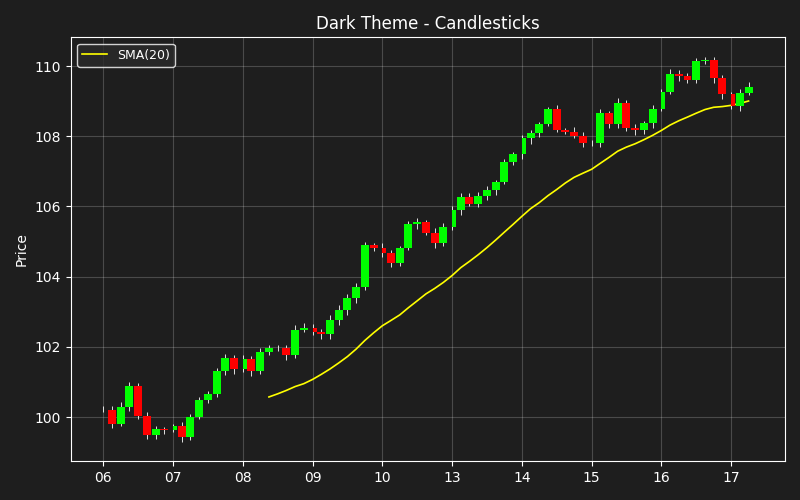

Note
Click here to download the full example code
Dark Theme Example¶
A candlestick chart with dark background - typical of trading platforms.

import matplotlib.dates as mdates
import matplotlib.pyplot as plt
import numpy as np
import pandas as pd
import busdayaxis
busdayaxis.register_scale()
# Use dark theme
plt.style.use("dark_background")
n = 75
rng = np.random.default_rng(42)
# Generate hourly data
hours = list(range(9, 17))
all_times = []
current = pd.Timestamp("2025-01-06")
while len(all_times) < n:
if current.weekday() < 5:
for h in hours:
all_times.append(current + pd.Timedelta(hours=h))
current += pd.Timedelta(days=1)
bar_idx = pd.DatetimeIndex(all_times[:n])
# Price data
returns = rng.normal(0.0005, 0.005, n)
trend = np.linspace(0, 0.05, n)
close = 100 * (1 + trend + pd.Series(returns).cumsum()).values
# OHLC
open_ = np.roll(close, 1)
open_[0] = close[0]
high = np.maximum(open_, close) + rng.uniform(0.05, 0.15, n)
low = np.minimum(open_, close) - rng.uniform(0.05, 0.15, n)
# Colors - brighter for dark background
colors = ["#00ff00" if c >= o else "#ff0000" for c, o in zip(close, open_)]
body_bottom = np.minimum(open_, close)
body_height = np.abs(close - open_)
# SMA
sma = pd.Series(close).rolling(20).mean()
# Plot
fig, ax = plt.subplots(figsize=(8, 5))
fig.patch.set_facecolor("#1e1e1e")
ax.set_facecolor("#1e1e1e")
bar_width = pd.Timedelta(minutes=55)
ax.vlines(bar_idx, low, high, linewidth=0.6, color="white", zorder=3)
ax.bar(
bar_idx, body_height, bottom=body_bottom, width=bar_width, color=colors, zorder=4
)
ax.plot(bar_idx, sma.values, color="yellow", linewidth=1.2, label="SMA(20)")
# Styling for dark background
ax.set_ylabel("Price", color="white")
ax.set_title("Dark Theme - Candlesticks", fontsize=12, color="white")
ax.legend(loc="upper left", fontsize=9, facecolor="#2b2b2b", edgecolor="white")
ax.spines["top"].set_color("white")
ax.spines["bottom"].set_color("white")
ax.spines["left"].set_color("white")
ax.spines["right"].set_color("white")
ax.xaxis.label.set_color("white")
ax.yaxis.label.set_color("white")
ax.grid(True, alpha=0.2, color="white")
ax.set_xscale("busday", bushours=(9, 17))
ax.xaxis.set_major_locator(busdayaxis.DayLocator())
ax.xaxis.set_major_formatter(mdates.DateFormatter("%d"))
_ = plt.tight_layout()
Total running time of the script: ( 0 minutes 0.362 seconds)
Download Python source code: plot_dark_theme.py